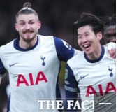

김형민입니다
8시간 전
#손흥민_바나나_코너킥_결승골 #역시나다
'호러쇼' 포스터·'멍때린' 포스테코글루 모두 살린 손흥민의 코너킥 골…'진짜 결자해지는 이런 것' 이성필 기자 님의 스토리 · 1시간 · 3분 읽음 ▲ 토트넘 홋스퍼 주장 손흥민이 맨체스터 유나이티드와의 카라바오컵 8강에서 코너킥을 그대로 넣어 결승골을 만들었다. ⓒ연합뉴스/AFP/REUTERS ▲ 토트넘 홋스퍼 …
8시간 전
'호러쇼' 포스터·'멍때린' 포스테코글루 모두 살린 손흥민의 코너킥 골…'진짜 결자해지는 이런 것' 이성필 기자 님의 스토리 · 1시간 · 3분 읽음 ▲ 토트넘 홋스퍼 주장 손흥민이 맨체스터 유나이티드와의 카라바오컵 8강에서 코너킥을 그대로 넣어 결승골을 만들었다. ⓒ연합뉴스/AFP/REUTERS ▲ 토트넘 홋스퍼 …
